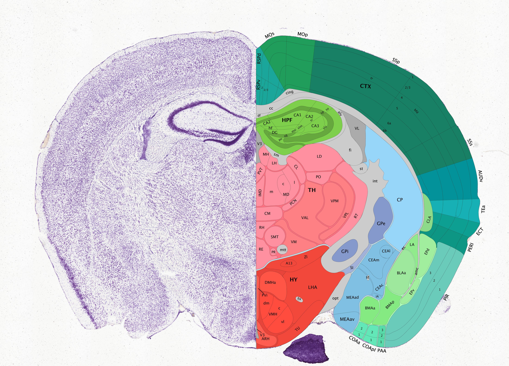
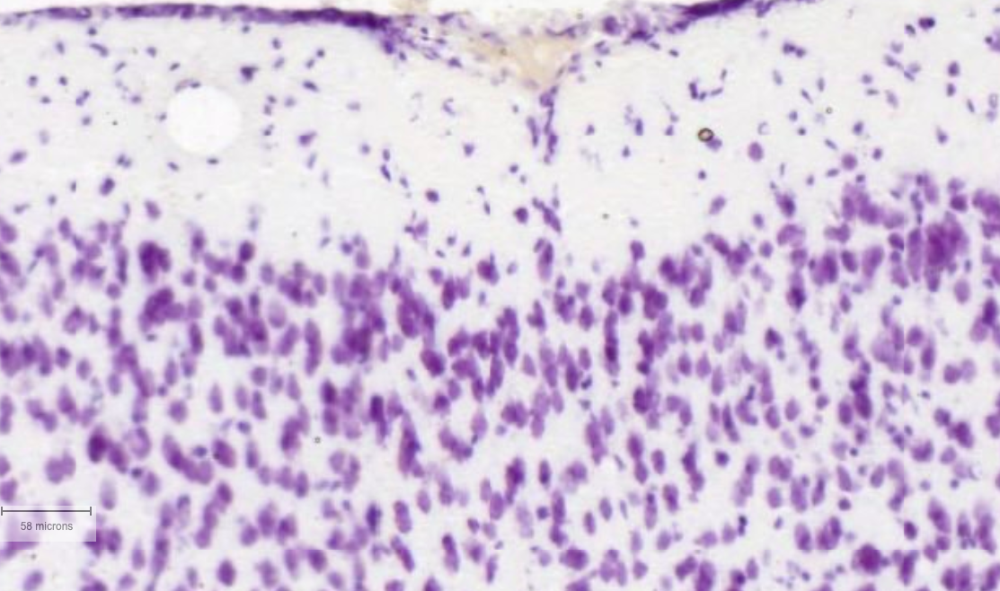
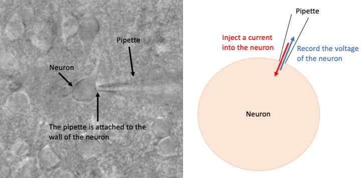
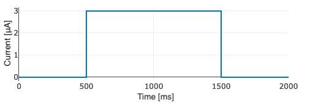

The brain is a complex organ that controls all of the body's functions.
The human brain is made up of 86 billion cells called neurons, and these neurons communicate through electrical signals.
Neurons are found throughout the whole central nervous system - for example, when you touch something there are neurons in your hand that fire electrical signals up your arm, through the spinal chord, and into the brain.
When the electrical activity of neurons isn't working properly, brain diseases such as Alzheimer's disease or epilepsy can arise.
The study of the electrical activity of neurons is called electrophysiology (from electro- meaning electrical and -physiology meaning the study of how the body works).
Here, we are going to take a step away from the mathematics and run a (simulated) biology experiment.
One of the most important experiments for studying the electrophysiology of neurons is known as single cell patch clamp.
The section below will describe this process.
Unfortunately, real patch clamp rigs are extremely expensive and require real brain tissue to run the experiment (as well as being exceptionally difficult!).
For this reason, you'll be doing your experiment on a simulated (but very realistic!) neuron.
Therefore in the steps below, you'll get to skip steps 1-3.
Luckily this makes the whole processes a lot easier!
Step-by-step guide to single cell patch clamp
To start a patch clamp experiment, you need some brain.
This can come from a hospital - for example if someone has had a small amount of brain removed to test if something is wrong - or more often from a mouse.
The section of brain must be sliced very thin (usually around 1/3 of a millimeter or less!) to make a brain slice which contains the neurons you wish to study.
Shown below is an example mouse brain slice (stained to make neurons clearer) and an "atlas", which tells us where the different parts of the brain are.
 Image credit: Allen Mouse Brain Atlas
Through a microscope, you should identify the area of the brain you want to study.
This is done by comparing how your slice of brain looks against the brain atlas.
Shown below is an example zoomed in on the motor region (responsible for movement).
You can clearly see the neurons in this region of the brain - they are the purple dots.
 Image credit: Allen Mouse Brain Atlas
The next step is the tricky one!
The neuron you wish to patch must be zoomed in on at very high magnification.
Then, an extremely fine glass pipette, with a tip notably smaller than the size of a neuron (approximately 1/1000th of a millimeter), must be carefully aligned to the body of the neuron and "break in" to the neuron (i.e. attach the pipette to the neuron).
Now you are ready to perform experiments on the neuron!
 Image credit (left): K.M. Jacobs, VCU
Now we can do lots of experiments on the cell. We will focus on "current clamp", which involves injecting a current into the neuron and measuring the voltage of the neuron to see how it's electrical activity changes.
In this experiment we will do a step injection, starting out at 0 uA (micro-Amperes) of current for the first 500 ms, then injecting \(I\) uA of current for the next second to see how the voltage changes, then 500 ms more with zero current injected to see how the neuron recovers.
 Example current injection experiment, with 500ms of no current, 1000ms of current injection, and 500ms more at rest.
For more information on patch clamp, see the video below, particularly 1:00-2:40. Credit: Allen Institute, YouTube link
Aims of experiment
We will now aim to do run a patch clamp experiment from a simulation of a neuron here on the computer. At each step, you will be asked to record some data. This data is required for us to build a realistic model of the neuron.
Firstly, don't change anything, keeping \(I\) at zero. Click to run the experiment. In this experiment, we are not doing anything to the neuron, so what you see in the voltage recording in what the neuron does at "rest". Look at the voltage of the neuron. Record the approximate value it takes. This is called the resting potential of the neuron.
Next, change the value of \(I\). In this experiment, after 500 ms of recording the neuron at rest we will stimulate the neuron with a current \(I\) micro-Amperes (\(\mu\)A). This stimulation will last for 1000 ms, before we will then let the neuron return to rest for 500 ms. Keep changing the value of \(I\) from -5 to 5. Do you see a sudden change of dynamics at any value of \(I\)? Record the value of \(I\) for which this change occurs.
In the previous question, you should have noticed that above a certain value of \(I\) the neuron starts to "spike". These spikes are called action potentials (APs), and these are when a neuron sends a signal to all other neurons in the brain. APs are how the brain encodes information, like a computer using billions of bits of data saved as ones and zeros (spiking and not spiking). Look at the voltage of the neuron for the value of \(I\) just below threshold for spiking and just above. Use this to estimate a value of "AP threshold", i.e. the neuron will spike if the voltage moves above this value.
For a range of values of \(I\) in which the neuron is spiking, record the value of the neuron's voltage at the maximum of the AP. Use this to make an approximation of "AP peak" (average over various values of \(I\)).
For a range of values of \(I\) in which the neuron is spiking, record the value of the neuron's voltage at the minimum of the AP (after it has fired). Use this to make an approximation of the "after hyperpolarization (AHP) voltage" (average over various values of \(I\)).
Make a table. For a range of values of \(I\) between -5 and 5, run the experiment and calculate the AP frequency (number of APs per second). Make a table of values, so that you could (and will on the next page!) plot the F-I (frequency-current) relationship.